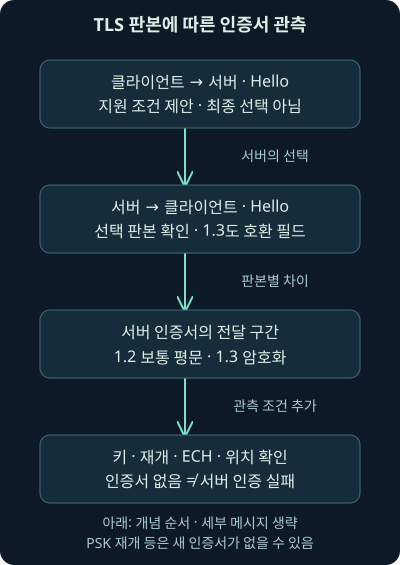
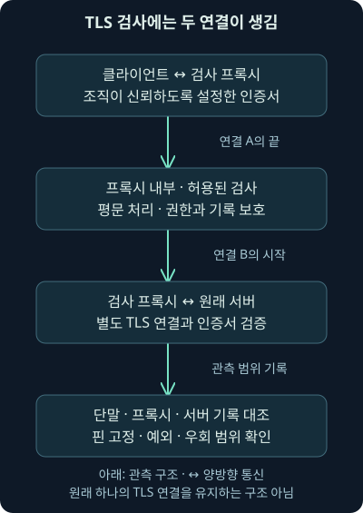
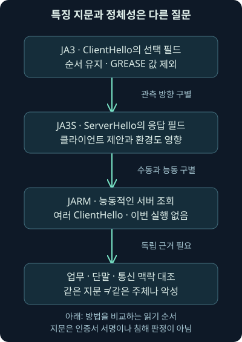

HTTPS 관측: TLS·인증서·지문과 판단의 한계
둘째 날 10강. 암호화 경계·TLS 판본·인증서·ECH와 지문을 이해하고 수동 관측과 능동 조회·도구 계산을 구별합니다.
1. 헤더와 본문이 안 보이면 조사는 어디서 이어갈까요?
가상 단말 192.0.2.25가 198.51.100.20으로 반복해서 접속합니다. 캡처에는 시각과 바이트 수가 있지만 9강에서 읽었던 URL 경로·쿠키·응답 내용은 보이지 않습니다. HTTPS 통신이라면 암호화된 내용을 저장한 것과 평문을 읽을 수 있는 것은 다르기 때문입니다.
이번 둘째 날 10강은 TLS가 보호하는 범위, 버전별 관측 차이, 인증서·이름·신뢰의 구분, 복호화와 프록시의 역할, JA3·JA3S·JARM 지문을 차례로 연결합니다. 단서를 잃는 부분뿐 아니라 남는 정보와 대조할 단말·서버 기록도 함께 보겠습니다.
패킷·인증서·공격 대상을 실제 수집한 결과가 아닌 독립적인 설명과 가상 사례입니다. 직접 실행한 부분은 미리 만든 숫자 목록으로 지문 표현을 계산한 로컬 프로그램입니다. 실제 TLS 연결·복호화·인증서 설치·키 수집·외부 지문 조회·스캔은 수행하지 않았습니다.
2. 암호화는 배달 중의 노출과 변조를 줄입니다
봉투를 봉인하고 받는 상대를 확인해 편지를 전달하는 상황을 생각해 보세요. TLS, Transport Layer Security는 통신 상대 사이에서 도청·변조·메시지 위조 위험을 줄이기 위한 프로토콜입니다. HTTPS는 HTTP 의미를 이런 보호된 통신과 연결해 사용하는 방식입니다.
다만 봉투 안의 편지 내용이 진실인지, 받는 사이트가 업무상 믿을 만한지까지 봉인이 보장하지는 않습니다. 공격자가 관리하는 사이트도 유효한 인증서를 사용할 수 있습니다. 평문 노출을 줄이는 통신 보호와 파일·로그인 화면·운영자의 의도는 다른 질문입니다.
암호화가 보안팀을 방해하기 위해서만 존재하는 것은 아닙니다. 비밀번호·업무 자료와 통신의 무결성을 보호하는 중요한 통제입니다. 조사에서는 보호를 무조건 약하게 만드는 대신 필요한 출처와 관측 경계를 설계해야 합니다.
3. 먼저 서로 쓸 수 있는 조건을 맞춥니다
핸드셰이크는 보호된 통신을 시작하며 버전·암호 알고리즘·키 관련 조건·상대 인증을 맞추는 과정입니다. 클라이언트가 보내는 ClientHello는 지원 조건의 제안이고, 서버의 ServerHello는 그에 대한 선택과 관련 자료를 담습니다.
암호 스위트는 통신에 사용할 암호 관련 알고리즘 조합을 식별하는 값입니다. TLS 1.2와 1.3에서 이 조합이 담는 범위는 같지 않습니다. TLS 1.3은 인증·키 합의 조건을 스위트 이름 하나에 모두 묶지 않고 다른 협상 구조와 나눕니다. 확장은 버전·서버 이름·추가 기능 등의 정보를 실어 나르는 구조입니다. 제안 목록에 값이 있다는 사실과 그 조건이 실제로 선택되어 연결이 끝까지 성립한 사실은 다릅니다.
TCP의 연결 성립, TLS 핸드셰이크, HTTP 요청과 응답도 같은 단계가 아닙니다. TCP 연결이 됐어도 TLS 인증이 실패할 수 있고, TLS가 성립해도 HTTP에서 권한이 거부될 수 있습니다. 계층을 나누어 기록해야 합니다.
4. 인증서의 키와 내용을 암호화하는 키를 구별합니다
공개키는 다른 사람에게 알려 줄 수 있는 키이고, 그와 관계된 개인키는 소유자가 보호해야 하는 비밀입니다. 공개키 인증서는 이름 등과 공개키의 연결을 서명으로 표현하는 자료입니다. 디지털 서명은 정해진 키로 해당 자료에 대한 검증 가능한 값을 만드는 방식입니다.
실제 많은 통신 자료는 공유한 대칭키 계열의 트래픽 키로 보호합니다. 인증서의 개인키가 언제나 그 데이터 키 자체인 것은 아닙니다. 키를 정하고 인증하는 과정과 이후 데이터를 보호하는 과정을 나누면 “서버 키만 얻으면 모든 캡처가 풀린다”라는 오해도 줄어듭니다.
이 설명은 암호의 수학 전체를 구현하는 실습이 아닙니다. 이번 프로그램에도 실제 인증서·개인키·트래픽 비밀값은 없습니다. 뒤에서 다루는 MD5 지문 계산을 TLS 인증이나 복호화로 혼동하지 않기 위해 역할부터 나누는 것입니다.
5. TLS 1.2에서는 인증서를 볼 수 있는 조건이 있습니다
인증서를 주고받는 일반적인 TLS 1.2 전체 핸드셰이크를 처음부터 수집했다면 서버 인증서 내용을 평문으로 볼 수 있는 경우가 있습니다. 그래서 과거 분석 화면에는 인증서의 이름·발급자 등이 네트워크 캡처에서 보입니다.
그러나 TLS 1.2라고 인증서가 항상 모든 캡처에 나타나는 것은 아닙니다. 세션 재개에서는 인증서를 다시 보내지 않을 수 있고, 시작 부분을 수집하지 못했거나 관련 조각이 빠졌을 수 있습니다. 버전·핸드셰이크 종류·수집 범위를 먼저 확인합니다.
인증서를 읽을 수 있어도 HTTP 본문까지 평문이라는 뜻은 아닙니다. 또 인증서에 여러 이름이 들어 있다면 그중 어느 자원과 파일을 실제로 요청했는지도 인증서 하나로는 알 수 없습니다. 인증서 관측과 응용 동작의 범위를 나눕니다.
6. TLS 1.3은 서버 인증서를 포함한 많은 핸드셰이크를 보호합니다
TLS 1.3에서는 ServerHello 뒤의 주요 핸드셰이크 자료가 암호화됩니다. 인증서를 보내는 흐름에서도 수동 네트워크 관찰자가 비밀값 없이 인증서 내용을 그대로 읽을 수 있다고 가정하면 안 됩니다. 미리 공유한 키인 PSK 기반 재개처럼 새 인증서를 보내지 않는 경우도 구별합니다.
2026년 11월 6일 확인한 현재 TLS 1.3 명세는 RFC 9846, 2026년 7월입니다. 이전 RFC 8446, 2018년 8월을 대체하지만 프로토콜 버전 이름은 여전히 TLS 1.3입니다. RFC 번호의 변화가 곧 TLS 1.4 출시를 뜻하지 않습니다. 이번 설명은 현재 명세와 과거 교재의 시점을 구별합니다. 현재 명세와 발행 정보
버전 표기에도 함정이 있습니다. TLS 1.3의 Hello에 호환용 legacy_version 값 0x0303이 들어갈 수 있습니다. 이는 10진수로 771이며 실제 협상 버전은 supported_versions 같은 해당 구조를 확인해야 합니다. 숫자 771 하나를 보고 실제 통신을 TLS 1.2라고 확정하지 않습니다. 현재 명세의 버전 협상

7. 평문을 못 읽어도 시간과 연결 경계는 남을 수 있습니다
수집 위치가 맞다면 주소·포트·전송량·연결 시각·지속 시간·일부 핸드셰이크 특징을 볼 수 있습니다. 다만 프록시·NAT·공유 주소·여러 응용의 결합 때문에 그 주소가 곧 사람이나 최종 서비스를 뜻하지는 않습니다.
ASN은 네트워크 경로 운영 단위를 식별하는 번호이고 지리 정보는 주소에 관한 보강 자료입니다. 어느 국가의 주소라는 정보로 실제 사용자의 국적·물리 위치·자료의 악성 여부를 확정하지 않습니다. 공유 클라우드 주소의 평판도 시각과 서비스 경계를 확인합니다.
포트 443이나 낯선 포트 하나로 정상·악성을 분류하지 않습니다. 다른 포트에서 TLS가 사용될 수 있고, 443에서 관측한 트래픽도 해석과 구성에 따라 확인해야 합니다. 전송량은 암호문·재전송·여러 요청 등이 섞인 단위일 수 있어 실제 파일 크기나 반출 내용으로 바로 바꾸지 않습니다.
8. SNI는 연결하려는 이름의 단서입니다
SNI, Server Name Indication은 클라이언트가 TLS 연결에서 사용할 서버 이름을 알리는 확장입니다. 같은 주소에서 여러 이름의 서비스를 제공할 때 서버의 선택에 도움이 됩니다. HTTP의 Host와 연관될 수 있지만 다른 계층의 값입니다.
ECH를 사용하지 않는 보통의 ClientHello에서 SNI를 읽을 수 있다면 어떤 이름을 요청했는지의 단서가 됩니다. 그래도 URL 경로·쿠키·실제 로그인·파일 내용까지 보인 것은 아닙니다. SNI가 없다고 어떤 서비스도 사용하지 않았다는 결론도 성립하지 않습니다.
다음 표는 대표적인 조건을 비교한 것입니다. 항상 보이는 필드 목록으로 암기하지 말고 핸드셰이크 종류·누락·복호화·프록시가 조건을 바꾼다는 점을 함께 읽어 주세요.
| 관측 조건 | 인증서 내용 | 이름의 단서 | HTTP 내용 |
|---|---|---|---|
| TLS 1.2 일반 전체 핸드셰이크·비밀값 없음 | 보일 수 있음 | 평문 SNI 등이 보일 수 있음 | 일반적으로 보호됨 |
| TLS 1.3·ECH 없음·비밀값 없음 | 보호되거나 재전송되지 않음 | 평문 ClientHello의 SNI 등이 보일 수 있음 | 보호됨 |
| TLS 1.3·ECH 사용·비밀값 없음 | 보호됨 | 외부 Hello와 다른 출처의 한계 고려 | 보호됨 |
| 적합한 비밀값·완전한 자료·지원 도구 | 조건에 따라 해석 가능 | 실제 처리 단계와 연결 | 해당 복호화 범위에서 해석 가능 |
9. ECH는 이제 단순한 미래 초안으로 설명하지 않습니다
ECH, Encrypted Client Hello는 ClientHello의 민감한 내용을 암호화해 보호하는 방식입니다. 2026년 11월 6일 확인한 RFC 9849는 2026년 3월 발행 표준입니다. 예전 자료의 “개발 중이며 언젠가 SNI가 감춰질 것”이라는 시점 표현을 그대로 현재 사실로 쓰지 않습니다. ECH의 현재 표준
ClientHelloInner는 실제 연결 조건을 담아 보호하는 내부 표현이고, ClientHelloOuter는 외부에 전송되는 표현입니다. ALPN은 HTTP/2 같은 응용 프로토콜을 협의하기 위한 정보입니다. ECH는 SNI와 ALPN 목록 같은 민감한 내용의 보호를 다루지만, 외부 관측자가 보는 이름을 최종 업무 사이트라고 그대로 읽으면 안 됩니다.
ECH의 표준화와 모든 단말·서버에서의 실제 사용은 다릅니다. 구성 정보와 양쪽 지원, 실제 협상 상태가 필요합니다. 확장 이름이 보였다는 사실만으로 해당 연결에서 ECH가 받아들여졌다고 확정하지 않습니다.
10. ECH가 있어도 모든 관측이 사라지는 것은 아닙니다
주소·시각·크기·외부 메시지의 일부 특징은 남을 수 있습니다. 평문 DNS나 다른 로그가 이름의 단서를 줄 수도 있습니다. 반대로 암호화 DNS·공유 인프라가 있으면 단일 IP를 특정 이름과 단정해서 연결하기 어렵습니다. 표준도 ECH만으로 모든 관련 정보가 숨겨지는 것은 아니라고 설명합니다.
GREASE는 확장을 모르는 상대가 이를 잘 처리하는지 확인해 프로토콜 확장 가능성을 유지하는 기법입니다. ECH에는 실제 ECH와 비슷하게 보이는 GREASE ECH도 있어, 확장 존재와 내부 이름을 보호한 실제 성공을 구별해야 합니다. ECH의 GREASE와 관측 한계
네트워크에서 이름을 못 본다면 승인된 리졸버·브라우저·프록시·서버의 기록으로 질문을 옮깁니다. 수집 권한과 보존 범위를 확인하면서 필요한 근거를 연결하는 것이지, 자동으로 모든 암호화를 끄라는 뜻은 아닙니다.
11. 인증서는 이름과 공개키를 연결하는 자료입니다
인증 기관, CA는 인증서에 서명하는 주체입니다. Subject는 인증서가 나타내는 대상의 이름 정보, Issuer는 발급자 정보입니다. 유효 기간·공개키·서명 알고리즘·확장도 인증서 해석의 일부입니다.
서버 인증서에서 중간 CA를 거쳐 신뢰 기준인 신뢰 앵커까지 검증하는 경로를 생각할 수 있습니다. 화면에 여러 인증서 이름이 보인다는 것과 해당 클라이언트가 실제로 경로·서명·기간·용도·이름을 모두 검증했다는 것은 다릅니다. 서버가 신뢰 앵커까지 항상 네트워크로 보낸다고 가정하지도 않습니다.
공격자가 유효한 인증서를 얻을 수도 있습니다. Let's Encrypt의 도메인 검증은 해당 도메인에 대한 제어를 확인하는 과정을 설명하며 사이트 콘텐츠의 무해함을 심사하는 절차와는 다릅니다. 2026년 11월 6일 제작사의 설명을 확인했습니다. 인증서 발급에서 확인하는 범위
12. CN만 보고 방문 사이트를 확정하지 않습니다
CN, Common Name은 Subject 안의 이름 속성입니다. SAN, Subject Alternative Name은 DNS 이름·IP 주소 같은 다른 식별자를 담는 확장입니다. 현재 서비스 이름 검증은 적절한 SAN 식별자와 클라이언트가 기대한 이름을 대조하는 방향으로 이해해야 합니다.
RFC 9525는 DNS 이름을 SAN의 dNSName으로 확인하고 Subject의 CN을 서비스 식별에 사용하지 않도록 정합니다. 2023년 문서가 RFC 6125를 대체한 관계를 2026년 11월 6일 확인했습니다. 따라서 옛 화면의 CN을 현재 필수 웹 이름 필드나 실제 방문 URL이라고 단정하지 않습니다. 현재 서비스 식별 규칙
가상 인증서 SAN에 files.example과 static.example이 있다고 해봅시다. 이 목록은 두 이름을 나타내지만 사용자가 어느 경로의 어떤 자료를 요청했는지까지 보여 주지 않습니다. 기대 이름과 인증 경로 검증, 실제 HTTP·응용 기록을 각각 확인합니다.
13. 인증서의 조직·지역이 비어 있다고 악성은 아닙니다
인증서는 발급 정책과 용도에 따라 담는 정보가 다릅니다. 도메인 검증 중심 인증서에서 조직·도시 같은 값이 없다는 이유만으로 악성코드를 판정할 수 없습니다. 값이 있더라도 실제 접속자의 위치·운영자의 의도·콘텐츠 안전성을 증명하는 것은 아닙니다.
자체 서명은 자신의 키로 자기 인증서에 서명한 경우를 뜻합니다. Subject와 Issuer 이름이 같다는 사실은 먼저 이름의 관계를 나타내며, 실제 서명 검증을 대신하지 않습니다. 같은 이름인 자체 발급과 자체 서명이라는 성질을 무조건 같은 것으로 읽지 않습니다. 인증서의 구조와 검증 경로
자체 서명은 내부 시험·관리 환경에도 쓰이고 공격에도 쓰일 수 있습니다. 조직이 어떤 신뢰 기준을 배포했는지, 실제 키·이름·용도가 맞는지, 기대한 서비스인지 확인해야 합니다. 낯선 인증서 하나로 안전 경고를 무시하거나 침해를 확정하지 않습니다.
14. 인증서를 어디에서 보았는지 남깁니다
TLS 1.3 연결의 인증서 정보를 단말 기록에서 얻었다면 그 출처를 명시합니다. 패킷에서 수동으로 읽었다고 바꾸지 않습니다. 브라우저 화면·EDR·서버 설정·프록시·외부 관측 서비스는 각각 다른 시간과 위치의 정보를 제공할 수 있습니다.
새로 서버에 접속해 읽은 인증서는 현재의 능동 관측입니다. 사건 당시 인증서와 같다는 보장은 없습니다. 다른 로드밸런서·SNI·위치·시간에 따라 선택도 달라질 수 있습니다. 관측 시각과 조회 조건을 함께 적어야 합니다.
프록시가 중간에 있다면 클라이언트가 본 인증서와 원격 서버 쪽 인증서를 구별합니다. 그 차이가 의도된 조직 검사인지 다른 변경인지 정책과 실제 경로로 확인합니다. 발급자 이름만 보고 전체 연결의 정당성을 자동 확인하지 않습니다.
15. TLS 검사 프록시는 두 보호 구간을 만듭니다
TLS 검사 프록시는 클라이언트와 서버 사이에서 각각 TLS 끝점 역할을 하며 평문 처리 구간에서 필요한 검사를 수행하는 구조입니다. 클라이언트↔프록시, 프록시↔서버의 두 세션을 구별해야 합니다. 원래 하나의 끝간 보호 통로를 그대로 들여다보는 마법 장치가 아닙니다.
클라이언트가 프록시의 인증서를 신뢰하도록 설정된 조건과 프록시가 원격 서버를 올바르게 검증하는 조건이 각각 필요합니다. 클라이언트에서 오류가 없었다는 사실만으로 프록시 이후의 이름·인증서 검사까지 올바르게 수행됐다고 가정하지 않습니다.
2026년 11월 6일 Palo Alto Networks의 공식 SSL Forward Proxy 설명도 두 별도 세션과 프록시의 역할을 설명합니다. 이 개념을 모든 제품·모드의 같은 동작 보장으로 확대하지 않습니다. 두 세션의 제조사 설명
16. 프록시를 쓰면 모든 연결이 똑같이 해독되나요?
응용 프로그램이 특정 인증서나 키를 기대하는 인증서 고정, certificate pinning이 있으면 중간 프록시와 호환되지 않을 수 있습니다. 클라이언트 인증서·비지원 프로토콜·장치 신뢰 저장소·정책 예외·성능도 관측 범위를 바꿉니다. 제조사도 이런 비복호화 조건을 구별합니다.
TLS를 종료해 검사하는 흐름과, 암호화 통로를 그대로 중계하는 흐름은 다릅니다. 어느 연결을 검사하거나 통과시킬지는 지원 기능과 연결 전 정책의 문제입니다. TLS 1.3이라고 모든 트래픽을 반드시 복호화해야 한다거나, TLS 1.2는 중간 아무 시점에서나 비밀값 없이 검사에 합류할 수 있다고 일반화하지 않습니다.
이번에는 신뢰 루트 설치·검사 정책 변경·암호화 약화·실제 프록시 구성을 수행하지 않았습니다. 운영 설계에서는 업무·민감 자료·접근·보존·오류 처리·서버 검증 책임을 함께 정해야 합니다. 복호화 한 가지를 모든 환경의 유일한 답으로 제시하지 않습니다.

17. 서버 개인키만으로 복호화되는 조건은 제한적입니다
전방향 비밀성은 장기 키가 나중에 유출돼도 과거 통신 비밀이 함께 드러나지 않도록 설계하는 성질입니다. DHE는 일시적인 디피-헬먼 키 합의, ECDHE는 이를 타원 곡선 방식으로 하는 키 합의를 가리킵니다. 서로 공개 자료를 교환해 통신 비밀을 정하되 인증용 장기 키와 역할을 나누는 방식입니다. 이렇게 일시적인 키 합의 값을 사용하는 흐름에서는 서버의 장기 인증 키만으로 과거 트래픽 키를 얻을 수 없도록 합니다. 현재 끝점이나 세션 비밀값이 유출되는 문제까지 막는다는 뜻은 아닙니다.
Wireshark 공식 안내의 RSA 개인키 방식은 TLS 1.2 이하 중 적절한 RSA 키 교환, 일치하는 서버 키, 필요한 전체 핸드셰이크, 재개가 아닌 세션 같은 조건을 요구합니다. 인증 기관 개인키나 ECDHE 서버의 서명 키를 넣으면 모든 것이 풀린다는 방식이 아닙니다. 2026년 11월 6일 조건을 확인했습니다. RSA 방식과 세션 비밀값 방식의 차이
TLS 1.3에서 정적 RSA 키 교환이 제거됐다는 설명과 “모든 모드가 언제나 동일한 전방향 비밀성을 보장한다”는 설명은 구별해야 합니다. PSK는 미리 공유한 키를 뜻하며 PSK만 쓰는 모드와 새 키 합의를 함께 쓰는 모드는 다릅니다. RTT는 메시지가 상대에게 갔다가 응답이 돌아오는 한 번의 왕복 시간입니다. 0-RTT는 재개 때 이번 핸드셰이크의 왕복을 기다리기 전에 보내는 초기 자료를 뜻합니다. 이 자료에도 전방향 비밀성과 재전송 방지의 예외가 있습니다. 현재 명세의 조건을 확인하고 버전 이름만으로 모든 연결의 성질을 확정하지 않습니다. TLS 1.3의 키 설정·재개·초기 자료
18. 키 로그가 있어도 자료와 도구 조건이 맞아야 합니다
키 로그는 분석 도구가 특정 세션을 해석할 수 있도록 응용·암호 라이브러리가 제공하는 비밀값 자료입니다. 과거에 흔히 쓰던 pre-master secret이라는 표현 하나가 현재 모든 TLS 1.3 비밀값의 정확한 이름은 아닙니다. 핸드셰이크·응용 트래픽 등 단계에 맞는 자료가 필요합니다.
비밀값과 캡처가 같은 세션의 것인지, 필요한 방향과 조각이 남았는지, 재조립·복호화 설정과 구현이 해당 프로토콜을 지원하는지 확인합니다. 키 로그 파일이 비어 있거나 잘못된 세션이라면 파일이 존재한다는 사실만으로 내용이 해독되지 않습니다.
키 로그는 보호할 민감 자료입니다. 이번 강의는 실제 비밀값을 만들거나 수집·게시하지 않았습니다. 승인된 분석에서 필요한 범위를 정해 다루어야 하며, 실제 사용자 전체의 통신 키를 무심코 저장하는 절차로 이해하면 안 됩니다.
19. 결과가 없으면 암호화와 수집·해석을 분리해 봅니다
인증서나 HTTP 요청이 안 보이면 먼저 수집 시작 시각·인터페이스·방향·길이·드롭·조각 누락을 봅니다. 다음에 TLS 버전·재개·ECH·프록시·비밀값·재조립·도구 설정을 확인합니다. 모든 빈 결과를 암호화 하나로 설명하거나, 반대로 모든 것을 통신 부재로 바꾸지 않습니다.
서버·프록시에는 요청 결과가, 단말에는 프로세스·브라우저·설치·파일 활동이, 리졸버에는 이름 조회가 남을 수 있습니다. 실제로 어떤 로그가 설정되고 보존됐는지 확인해야 합니다. 여러 출처가 있다는 가능성과 현재 확보한 증거는 다릅니다.
수집된 내용이 제한되어도 주소·방향·시각·양·연결 관계로 조사 질문을 좁힐 수 있습니다. 다만 그 요약으로 특정 파일 내용이나 로그인 성공을 상상하지 않습니다. 미확인 항목과 다음 자료를 명시합니다.
20. HTTPS·TLS·QUIC·DoH는 같은 이름이 아닙니다
TLS는 HTTP 외의 여러 응용에도 사용됩니다. DoH는 DNS 메시지를 HTTPS로 전달하는 방식이므로 암호문만 보고 일반 웹 탐색과 구별하기 어려울 수 있습니다. 반대로 TLS가 보였다는 이유만으로 반드시 HTTP라고 결론 내릴 수는 없습니다.
HTTP/3는 QUIC 위에서 동작하고, QUIC은 TLS 1.3의 핸드셰이크를 자체 전송 구조와 연결합니다. TCP용 조건식으로 모든 QUIC을 찾을 수 없고, 일반 TCP의 TLS 레코드 처리와 똑같다고 가정해서도 안 됩니다. 앞선 6강의 계층 구분을 이어가면 됩니다.
이름·인증서·지문 도구도 어떤 프로토콜과 관측 위치를 지원하는지 확인합니다. TCP ClientHello만을 전제로 만든 계산을 모든 암호화 통신의 공통 신원표처럼 사용하지 않습니다.
21. 지문은 몇 가지 특징을 압축한 비교값입니다
TLS 지문은 핸드셰이크의 선택된 특징을 일정 규칙으로 표현해 비슷한 통신을 찾도록 하는 값입니다. 서명된 프로그램 신분증이 아닙니다. 같은 암호 라이브러리를 공유하거나 비슷하게 설정한 다른 프로그램이 같은 특징을 만들 수 있습니다.
반대로 한 프로그램도 판본·설정·연결 대상·재개·확장 순서·프록시 때문에 다른 모양을 낼 수 있습니다. 모든 매개변수가 컴파일 시점에 영구 고정된다는 설명은 과도합니다. 드문 지문·평판 일치는 조사 후보를 만드는 근거이지 악성 여부나 사람·공격자의 증명이 아닙니다.
이제 UA와 다른 출처의 단서를 하나 더 얻은 셈입니다. 둘 다 다른 방식으로 조작·공유·변경될 수 있으므로 “둘이 일치했으니 무조건 확인됐다”라고 끝내지 않습니다. 단말의 실제 프로그램과 업무 맥락을 대조해야 합니다.
22. JA3의 다섯 묶음을 순서대로 읽습니다
JA3는 ClientHello의 버전 필드·암호 스위트 목록·확장 목록·지원 그룹 목록·점 형식 목록을 정해진 순서로 연결하고 MD5로 요약하는 방식입니다. MD5는 이 기존 지문 형식에서 쓰는 128비트 요약값이며 보통 32개의 16진수 문자로 표시합니다. 안전한 서명·인증 수단으로 제시하는 것이 아닙니다.
묶음 사이에는 쉼표, 한 묶음 안의 값 사이에는 하이픈을 둡니다. 순서를 보존하므로 목록을 임의로 정렬하면 다른 질문을 계산하게 됩니다. 지원 그룹은 키 합의에 쓰는 그룹 식별자이고 점 형식은 타원 곡선의 점 표현과 관련된 기존 필드입니다. 숫자는 식별 코드이지 위험 점수·바이트 수가 아닙니다.
2026년 11월 6일 Salesforce의 원래 설명을 확인했습니다. 저장소는 2025년 5월 1일 보관 상태가 되었고 Salesforce가 적극 유지 관리하지 않는다고 명시합니다. 방식의 원리와 현재 도구의 유지·지원 상태를 구별해야 합니다. JA3의 필드·처리·유지 상태
23. GREASE 값을 빼는 이유도 규칙의 일부입니다
TLS에는 알 수 없는 확장 값을 상대가 잘 처리하는지 확인하기 위한 GREASE 예약 값이 있습니다. JA3는 해당 목록의 이런 값을 제외해 비교합니다. 무조건 모든 낯선 값을 지우거나, 알 수 없는 값을 공격이라고 판단하는 것과 다릅니다.
이번 자체 예제에서는 2570, 16진수 0x0a0a라는 예약 값을 암호·확장·그룹 목록에 넣어 비교합니다. 실제 네트워크로 시험한 것이 아니라 숫자 목록에 추가한 것입니다. 2026년 11월 6일 GREASE의 목적과 예약 값은 RFC 8701로 확인했습니다. GREASE의 목적과 값
ECH로 내부 Hello가 보호되거나 프록시가 새 세션을 만들면 어느 Hello에서 뽑은 특징인지도 확인해야 합니다. 원래 단말의 모든 지원 조건을 그대로 관측했다는 가정을 유지할 수 없을 수 있습니다.

24. 가상 Hello 필드로 실제 계산을 해보겠습니다
가상 필드 파일과 지문 계산 프로그램을 제공합니다. training-hello-fields-v1은 직접 만든 교육용 입력입니다. 실제 ClientHello 메시지나 TLS 패킷 전체가 아니며, 미리 고른 숫자 목록만 담았습니다.
Python 3.12.14에서 다음을 실제 실행했습니다. 표준 라이브러리만 사용하며 외부 지문 데이터베이스를 조회하지 않습니다.
python fingerprint_hello.py hello-fields.json실제 H1의 계산 문자열은 771,4865-4866,0-10-11-13-43-51,29-23,0입니다. 앞의 771은 가상 legacy_version이며, 다음 묶음부터 암호·확장·그룹·점 형식을 나타냅니다. 이 숫자로 실제 협상된 TLS 버전이나 실행 프로그램을 확인한 것이 아닙니다.
MD5 결과는 e2cffc125debe8b8da45016372134155였습니다. 프로그램의 usedforsecurity=False는 기존 형식의 비보안 요약 계산이라는 용도를 표시합니다. 허위 입력의 진실성·MD5의 충돌 저항·실제 프로그램의 신뢰를 보장하지 않습니다. Python hashlib의 용도와 옵션
25. 이름을 바꾸고 순서를 바꾸면 무엇이 달라질까요?
H2는 프로그램 이름 주장만 다르고 선택한 목록은 H1과 같습니다. 실제 결과도 같은 문자열·같은 MD5였습니다. 입력 목록 자체가 같으니 같은 결과가 나온 것이며, 프로그램이 승인·악성을 구별한 것이 아닙니다.
H3는 확장 10과 11의 순서를 바꿨습니다. 실제 MD5는 be3d7e78f53aa58ea985052d91ab501a로 달라졌습니다. H4는 GREASE 값을 추가했지만 해당 값을 제외한 결과가 H1과 같았습니다. 변한 것과 의도적으로 무시한 것이 무엇인지 읽어야 지문도 설명할 수 있습니다.
| 가상 입력 | 실제 결과의 관계 | 판단 한계 |
|---|---|---|
| H1·H2: 목록 같고 이름 주장 다름 | 같은 문자열·같은 MD5 | 실제 응용·승인 여부 미검증 |
| H3: 확장 순서 변경 | 다른 MD5 | 다른 악성코드라는 결론 불가 |
| H4: GREASE만 추가 | H1과 같음 | 제거 규칙의 효과, 실제 세션 검증 아님 |
모든 출력의 identity_verified와 negotiated_version_verified는 거짓이고 사건 판정은 미확인입니다. 실제 패킷 추출·TLS 협상·인증서 서명 확인·JARM 스캔을 한 것처럼 쓰지 않습니다.
26. JA3S와 JARM은 관측 방식부터 다릅니다
JA3S는 ServerHello의 선택된 버전·암호·확장 같은 특징으로 서버 응답을 비교하는 방식입니다. 서버의 응답은 클라이언트의 제안과 서버 구성·판본·중간 장치에 영향을 받습니다. 같은 서버가 모든 클라이언트에게 영구히 같은 값을 준다고 보장하지 않습니다.
JARM은 대상 서버에 여러 조건의 ClientHello를 능동적으로 보내 응답을 요약하는 서버 지문 방식입니다. 제작사 설명은 10개의 제안을 사용하는 과정을 설명합니다. JA3·JA3S처럼 이미 있는 통신을 수동 관찰하는 것과 달리 새 접속이 발생하며 상대 로그에 관측될 수 있습니다. 이번 강의에서는 실행하지 않았습니다. JARM 제작사의 방식 설명
같은 JARM이 보인다는 사실도 설정이 비슷하다는 근거이지 같은 운영자·같은 피해·C2 성공의 증명은 아닙니다. 과거 특정 집단의 관측값과 당시 비교 목록을 현재의 영구 차단 정답표로 쓰지 않습니다. 능동 확인은 대상·권한·운영 영향을 별도로 정해야 하는 작업입니다.
27. 로그와 표시 필터가 지원하는 범위를 확인합니다
Zeek 같은 도구에서 JA3·JA3S를 보려면 실제 판본·패키지·로드된 설정·수집한 핸드셰이크를 확인해야 합니다. Zeek가 있다는 사실만으로 모든 연결의 지문이 기본 생성됐다고 가정하지 않습니다. 2026년 11월 6일 공식 패키지 목록의 JA3 설명과 유지 상태를 확인했습니다. Zeek의 JA3 패키지
다음은 Wireshark의 미실행 표시 필터 예시입니다. 첫 줄은 ClientHello로 해석된 메시지, 둘째 줄은 SNI 필드가 해석되어 있는 항목, 셋째 줄은 ServerHello에서 지원 버전 선택값 0x0304가 해석된 항목을 좁힙니다.
tls.handshake.type == 1
tls.handshake.extensions_server_name
tls.handshake.type == 2 and tls.handshake.extensions.supported_version == 0x0304==는 값 비교이고 and는 조건을 모두 만족하게 합니다. 1·2는 해당 핸드셰이크 메시지 유형, 0x0304는 TLS 1.3 버전 값입니다. 클라이언트 제안 목록과 서버 선택을 섞지 않으려고 셋째 줄에서 방향에 맞는 메시지 유형을 함께 봅니다. 그래도 이 결과만으로 핸드셰이크 전체 성공을 보증하지는 않습니다.
2026년 11월 6일 공식 TLS 참조에서 이 필드들의 적용 범위 3.0.0~4.6.9를 확인했습니다. 여러 메시지가 같은 프레임에 있으면 필드 조건만으로 원하는 메시지 관계가 보장되는지도 세부 해석에서 확인해야 합니다. 필터 결과가 없으면 버전·ECH·누락·재조립·해석 조건을 다시 봅니다. 4.6.9를 영구 최신이라고 부르는 것이 아니며 이번 환경의 실행 결과도 아닙니다. 공식 TLS 필드 참조
28. 암호화 관측의 조사 문장을 완성합니다
가상 메모를 이렇게 쓸 수 있습니다. “관측 위치에서 특정 주소로의 반복 통신과 바이트 수를 확인했다. HTTP 경로·본문은 현재 자료에서 미확인이다. TLS 버전·재개·ECH·프록시·수집 시작 조건을 확인하고, 이름·인증서 정보는 어느 출처에서 얻었는지 구분한다.”
지문이 있다면 “선택 특징의 유사성이며 프로그램 신원·악성 여부는 미확인”이라고 덧붙입니다. 승인된 단말·브라우저·서버·프록시·리졸버 자료를 대조해 실제 주체·업무·행위·영향을 확인합니다. 외부 주소나 포트·인증서의 빈 필드 하나로 침해를 확정하지 않습니다.
이번에 실행한 것은 가상 필드의 문자열·MD5 계산뿐입니다. 기존 8강의 자체 PCAP 복원과도 다른 작업입니다. 다음 독립 실습에서는 HTTP·HTTPS의 관측 가능한 자료와 부족한 자료를 함께 놓고 조사 기록으로 연결하겠습니다. 원본 워크북의 수행 완료를 의미하지 않습니다.
29. 복습: 보이는 정보와 보증하는 범위를 구별해 보세요
질문 1. HTTPS 인증서가 유효하면 내려온 파일도 안전한가요?
해설: 통신 상대 인증과 내용의 안전성은 다른 질문입니다. 실제 파일·응용·실행 근거를 확인합니다.
질문 2. TCP 연결이 되면 TLS와 HTTP 로그인도 성공한 것인가요?
해설: 연결·핸드셰이크·응용 인증은 다른 단계입니다. 각 계층의 결과를 따로 확인해야 합니다.
질문 3. TLS 1.2 캡처에서 인증서가 없으면 통신이 실패했나요?
해설: 재개·수집 시작·조각 누락 같은 조건을 봅니다. 인증서 부재만으로 성공·실패를 단정하지 않습니다.
질문 4. 현재 RFC 9846은 TLS 1.4라는 뜻인가요?
해설: TLS 1.3 명세의 갱신입니다. 문서 번호와 프로토콜 버전 이름을 구별합니다.
질문 5. legacy_version이771이면 실제 협상 버전도 TLS 1.2인가요?
해설: TLS 1.3의 호환용 값일 수 있습니다. 제안·선택 구조와 실제 핸드셰이크를 확인합니다.
질문 6. SNI가 보이면 URL 경로와 파일도 알 수 있나요?
해설: 이름의 단서입니다. 응용 경로·본문·실제 접근 결과를 보여 주는 것은 아닙니다.
질문 7. ECH 확장이 있으면 내부 이름 보호가 성공했나요?
해설: GREASE ECH와 실제 협상·수락 상태를 구별합니다. 확장 존재만으로 확정할 수 없습니다.
질문 8. 인증서의 CN만으로 현재 서비스 이름 검증을 끝내도 되나요?
해설: 현재 RFC 9525는 적절한 SAN 식별자와 기대한 이름을 확인하도록 정합니다. 경로·기간·용도·서명 검증도 별도입니다.
질문 9. 조직·도시 정보가 비었으면 악성 인증서인가요?
해설: 발급 정책과 용도가 다를 수 있습니다. 빈 선택 정보 하나로 악성 여부를 판정하지 않습니다.
질문 10. Subject와 Issuer 이름이 같으면 서명도 검증한 것인가요?
해설: 이름의 관계를 본 것입니다. 실제 자체 서명·서명 검증·신뢰 정책을 자동 확인한 것은 아닙니다.
질문 11. 검사 프록시는 원래 끝간 TLS를 그대로 들여다보나요?
해설: 일반적인 종료형 검사에서는 두 별도 세션을 만듭니다. 각 구간의 신뢰·검증·평문 처리 책임이 있습니다.
질문 12. 서버의 RSA 개인키만 있으면 ECDHE·TLS 1.3도 모두 풀리나요?
해설: 그렇지 않습니다. 키 설정 방식·버전·세션·비밀값 조건이 맞아야 하며 CA 키도 대체물이 아닙니다.
질문 13. TLS 1.3이라는 이름만으로 모든 모드의 전방향 비밀성이 같나요?
해설: PSK만 쓰는 모드·새 키 합의·0-RTT의 예외를 구별해야 합니다. 실제 협상 조건을 봅니다.
질문 14. H1과 H2의 지문이 같으면 승인 프로그램임이 확인됐나요?
해설: 선택 목록이 같아 계산 결과가 같은 것입니다. 이름 주장과 실제 실행·승인은 검증하지 않았습니다.
질문 15. 확장 순서만 바뀐 H3는 다른 악성코드인가요?
해설: 지문 계산의 입력이 달라졌을 뿐입니다. 실제 프로그램·설정·업무 근거가 더 필요합니다.
질문 16. JARM 조회는 이미 저장한 통신만 읽는 작업인가요?
해설: 여러 조건으로 새 TLS 접속을 만드는 능동 방식입니다. 수동 지문과 다르며 이번 강의에서는 실행하지 않았습니다.